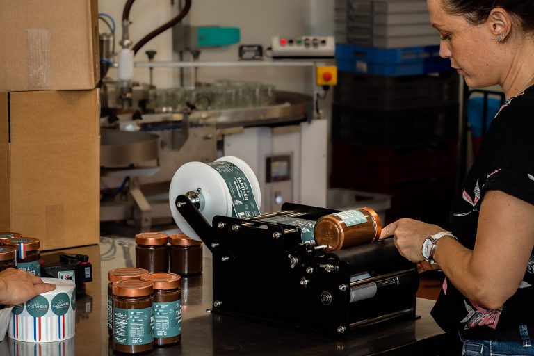

.svg)
Une histoire de famille,
de vergers... et de gourmandise
Chez Castaneas, nous cultivons bien plus que des noix, des noisettes et des châtaignes. Nous cultivons une passion familiale qui pousse au rythme des saisons depuis plus de 30 ans, au cœur du Tarn-et-Garonne. Et entre nous, quand on passe ses journées entourés de vergers, il est difficile de ne pas devenir un peu gourmands...

Une histoire familiale qui grandit au rythme des saisons depuis les années 1990.
Des vergers du Sud-Ouest cultivés avec bon sens, patience et respect des sols.
Alain, Chantal, Aurélien, Marion, Séverine et toute l'équipe derrière chaque récolte.
La famille Dégans,
ancrée dans ses vergers.
Nous sommes la famille Dégans. Une famille d'agriculteurs qui aime les bons produits, le travail bien fait et les saveurs authentiques.
L'aventure commence dans les années 1990 lorsque Alain et Chantal décident de planter leurs premiers châtaigniers. Puis arrivent les noyers, les noisetiers... et quelques années plus tard, une nouvelle génération prête à prendre la relève.
Aujourd'hui, Aurélien, Marion, Séverine et toute l'équipe poursuivent cette belle aventure familiale avec la même idée en tête : produire des fruits de qualité et les transformer en produits gourmands dont nous sommes fiers.

Cultiver, récolter,
transformer nous-mêmes.
Chez Castaneas, nous avons choisi de rester proches de ce que nous faisons le mieux : cultiver et transformer nos propres récoltes.
Noix, noisettes et châtaignes sont cultivées sur nos terres puis transformées directement dans notre atelier. Résultat ? Des produits simples, sincères et gourmands qui racontent vraiment d'où ils viennent.
Pas besoin d'aller chercher bien loin quand le meilleur pousse déjà dans nos vergers.
Prendre soin des sols,
des arbres et du vivant.
Nos vergers s'étendent sur près de 150 hectares dans le Sud-Ouest. Nous travaillons chaque jour pour respecter nos sols, nos arbres et notre environnement.
Parce qu'une bonne noisette, une belle noix ou une châtaigne savoureuse commencent toujours par une terre bien cultivée. Et parce que la nature fait déjà beaucoup de choses très bien sans qu'on ait besoin de trop la déranger.
Des parcelles suivies au fil des saisons, avec une attention constante à l'équilibre naturel.
Un ancrage local fort dans le Tarn-et-Garonne, au plus près de nos récoltes.
Des choix simples et cohérents pour produire mieux, sans en faire trop.

Partager le goût de nos récoltes,
autrement.
Parce que nous voulions partager le goût de nos récoltes autrement. Créer des produits qui nous ressemblent :
Derrière chaque pot de pâte à tartiner, chaque bouteille d'huile ou chaque sachet de fruits secs, il y a des arbres, des récoltes, des saisons... et quelques réveils très matinaux.
Vous faire découvrir le vrai goût
de nos vergers.
Sans artifices. Sans détour. Juste de bons produits cultivés avec passion par une famille qui aime son métier et qui est toujours heureuse de partager un peu de son terroir avec vous.
Bienvenue chez Castaneas.